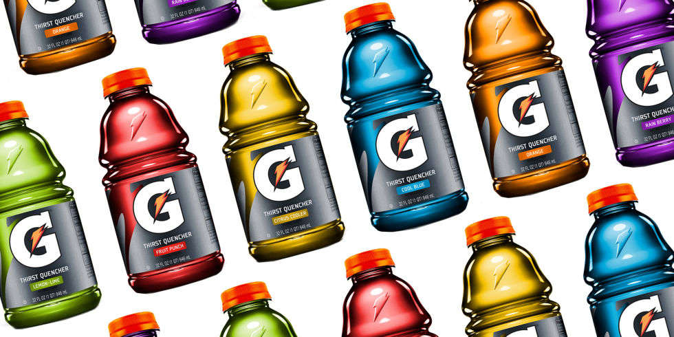
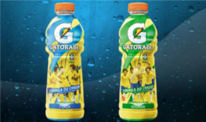
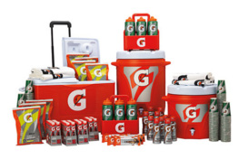
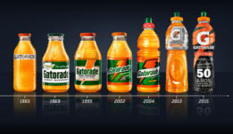

GATORADE®
GATORADE® é uma marca de repositor hidroeletrolítico ou isotônico produzida pela Quaker Oats Company, atualmente uma divisão da PepsiCo. Comercializada originalmente nos Estados Unidos atua atualmente em vários países, inclusive no Brasil. A bebida foi formulada para ajudar a repor os líquidos e sais minerais perdidos com o suor e fornecer energia para os músculos em movimento, principalmente por sua composição conter água, carboidratos e sais minerais como sódio e potássio. Desde que surgiu, na década de 60, GATORADE® é um dos mais marcantes patrocinadores dos campeonatos esportivos.

